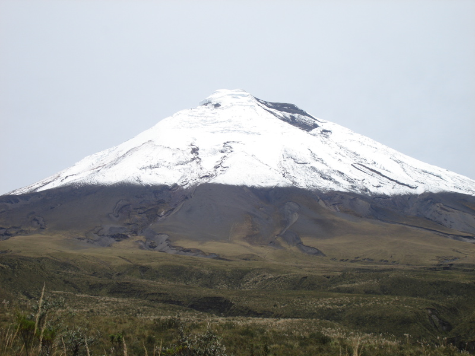
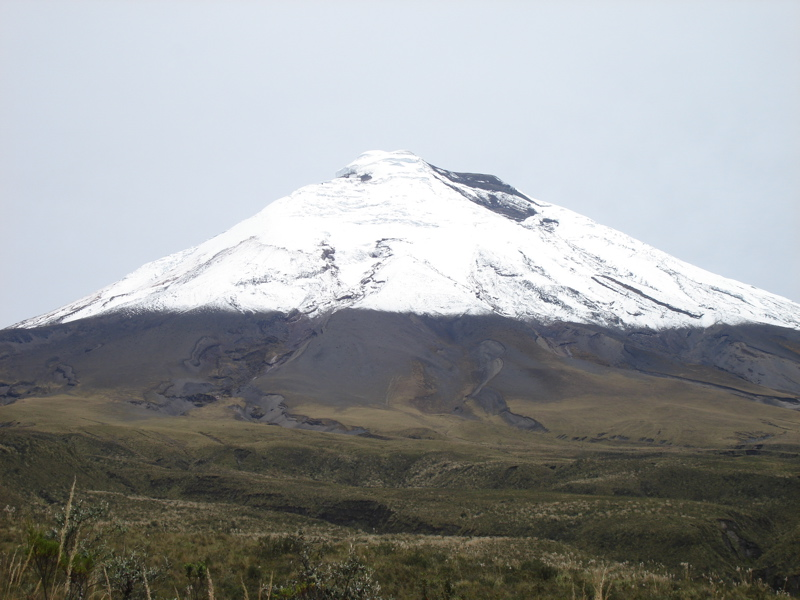

TURISMO EN EL ECUADOR
Ecuador es un país con una vasta e inigualable riqueza natural y cultural. La diversidad de sus cuatro regiones ha dado lugar a cientos de miles de especies de flora y fauna. Cuenta con alrededor de 1640 clases de pájaros. Las especies de mariposas bordean las 4.500, los reptiles 345, los anfibios 358 y los mamíferos 258, entre otras. Ecuador está considerado como uno de los 17 países donde está concentrada la mayor biodiversidad del planeta, siendo además el mayor país con biodiversidad por km² del mundo. La mayor parte de su fauna y flora vive en 26 áreas protegidas por el Estado. Así mismo, ofrece atractivos históricos como Quito, gastronómicos y una variedad de culturas y tradiciones.
Ecuador Travel
¿Cuándo se fundó el Ecuador? 10 de agosto de 1809. Ecuador capital: Quito es la capital del Ecuador. Ecuador nace el 13 de mayo de 1830 al constituirse como estado libre e independiente luego de separarse de Colombia donde a éste territorio se denominaba Distrito del Sur Ecuador es privilegiado por su ubicación geográfica y e encuentra conformado por cuatro Regiones el Ecuador ( Costa, Galápagos, Sierra y Amazonía), y también están constituidos por 24 provincias con sus respectivas capitales. Cada viaje, cada rincón que visites será una nueva aventura, una experiencia de vida.
Turismo Ecuador, podemos realizar actividades turísticas con deportes de aventura (buceo, canopy, , turismo gastronómico, turismo fiestas religiosas, fiestas populares, fiestas cívicas, cultura y arte, sitios naturales, turismo en las comunidades. Ecuador es un territorio que posee una riqueza histórica y cultural,hermosos paisajes, encantadoras playas, mágicas cascadas, imponentes volcanes,nevados, páramos, exóticas selvas, con gente amable, y posee una cultura gastronómica extraordinaria. Realmente un destino que será inolvidable.